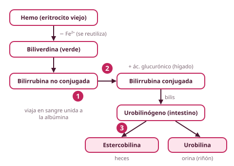

El grupo hemo es un anillo tetrapirrólico (porfirina) con un hierro ferroso. Está en la hemoglobina y la mioglobina, los citocromos, la catalasa y la peroxidasa (y anillos parecidos en las clorofilas y la vitamina B12). Sus nitrógenos y parte de sus carbonos proceden de la glicina.
La hemoglobina se recambia continuamente: se degrada ≈ 1 % al día conforme mueren los hematíes y se resintetiza en la médula ósea. La globina (proteína) y el hemo se fabrican de forma coordinada, ligada a la eritropoyesis.
En todos los tejidos, pero sobre todo en las células eritroides de la médula ósea (hemoglobina) y en el hígado (citocromos). Pasa por mitocondria → citoplasma → mitocondria. (No hace falta saber las enzimas salvo la primera.)
| Paso | Dónde | Qué ocurre |
|---|---|---|
| 1 · Limitante | Mitocondria | Glicina + succinil-CoA → ácido δ-aminolevulínico (ALA) por la δ-ALA sintasa. El hemo la inhibe (efector alostérico): retroinhibición |
| 2 | Citoplasma | 2 ALA → porfobilinógeno (depende de zinc; el plomo lo inhibe) → 4 porfobilinógenos → tetrapirrol lineal → uroporfirinógeno III (el I es no fisiológico) → coproporfirinógeno III |
| 3 | Mitocondria | Coproporfirinógeno III → protoporfirinógeno IX → protoporfirina → se añade el Fe²⁺ → hemo |
Hacen falta ocho enzimas para fabricar el hemo; si falla una (casi siempre por herencia), se acumulan porfirinas, que dañan sobre todo el sistema nervioso y la piel. Hay muchos tipos, uno por cada enzima.
La globina se rompe en aminoácidos que se reutilizan. El hemo se degrada en las células reticuloendoteliales del bazo, el hígado y la médula ósea: pierde el hierro (que se reutiliza) y forma los pigmentos biliares.

La ictericia aparece con bilirrubina por encima de 2-2,5 mg/dl: se deposita en tejidos ricos en fibras elásticas (se ve primero en la conjuntiva y el paladar).
| Ictericia | Bilirrubina que sube | Causas |
|---|---|---|
| Prehepática | No conjugada | Anemia hemolítica (el hígado no da abasto), albúmina baja, eritropoyesis ineficaz |
| Hepática | Conjugada (y no conjugada) | Destrucción de hepatocitos o alteración del flujo dentro del hígado: hepatitis viral aguda, hepatitis crónica, cirrosis |
| Posthepática (colestasis) | Conjugada | Obstrucción del colédoco: cálculos (coledocolitiasis), cáncer de cabeza de páncreas |
El síndrome de Gilbert no se debe a hemólisis: es una conjugación hepática algo deficiente (de la enzima que añade el ácido glucurónico) que eleva la bilirrubina no conjugada, sobre todo con el ayuno o el estrés. Es benigno.